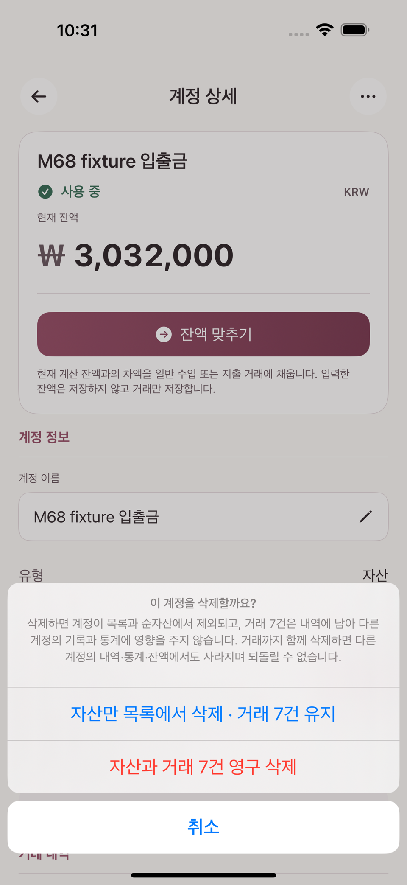
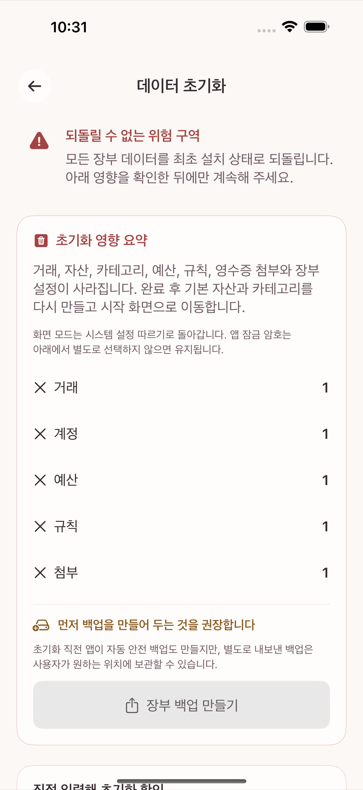

타미오는 대부분의 "지우기"를 삭제가 아니라 종료·보관으로 처리한다(3장, 5장). 하지만 아래 세 가지는 실행하면 되돌릴 수 없는 진짜 삭제다. 실행하기 전에 반드시 12장의 백업을 먼저 만들어 둔다.
거래 상세에서 삭제를 선택하면 "거래를 삭제할까요?" 확인이 뜬다.
계정 삭제는 그 계정에 거래가 있는지에 따라 다르게 동작한다.
두 번째 선택지는 이 앱에서 가장 파괴적인 작업이다. 실행 전 반드시 그 계정의 거래가 정말 필요 없는지 확인한다.

설정의 데이터 초기화는 모든 장부 데이터를 최초 설치 상태로 되돌린다. 화면 상단에 "되돌릴 수 없는 위험 구역" 경고가 뜨고, 실제로 실행하려면 확인 칸에 정확히 "초기화" 라는 글자를 그대로 입력해야 한다(대소문자·공백을 봐주지 않는다). 그런 다음에만 모든 장부 데이터 초기화 버튼이 눌린다.

이 작업은 계정·거래·예산·반복 규칙·문자 인식 규칙·영수증을 포함한 모든 것을 지운다. 실행 전에 12장의 백업을 반드시 먼저 만든다.
앱을 기기에서 삭제(언인스톨)하면 iCloud나 서버에 별도 사본이 없으므로 데이터가 함께 사라질 수 있다. 앱을 지우기 전에는 항상 백업 파일을 안전한 곳(iCloud Drive, 다른 기기 등)에 따로 보관해 둔다. 앱 안에는 이런 사전 안내 문구가 없다 — iCloud Drive가 언급되는 유일한 곳은 백업 저장 자체가 실패했을 때 뜨는 재시도 안내뿐이므로, 이 조언은 이 매뉴얼에서만 제공하는 것이며 앱 화면 문구를 그대로 인용한 것이 아니다.